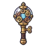
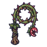
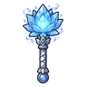

ด้ายพันคน
มอนธาตุไม่มีธาตุ Lv 89–94
เจอที่
| แมพ | โซน | Lv | ภูมิภาค |
|---|---|---|---|
| โรงหุ่นใต้วิหาร ชั้น 1 · ห้องขัง | 89–91 | เมืองหอระฆัง | |
| โรงหุ่นใต้วิหาร ชั้น 2 · โต๊ะช่าง | 91–94 | เมืองหอระฆัง | |
| หอรากมืด (Dark Root) | หัวใจต้นไม้มืด | 90–99 |
ค่าสถานะตามเลเวล
| Lv | HP | ATK | DEF | MDEF | EXP | Job |
|---|---|---|---|---|---|---|
| 89 | 76,676 | 234–352 | 36 | 27 | 134 | 101 |
| 91 | 81,647 | 242–364 | 36 | 27 | 136 | 102 |
| 94 | 89,091 | 255–384 | 38 | 28 | 141 | 106 |
ตีด้วยธาตุไหนดี
แรงขึ้น: —
เบาลง: วิญญาณ ×0.25
วัตถุดิบที่ดรอป
| ของ | โอกาส | |
|---|---|---|
| ด้ายแดง | 55% | 1 ชิ้น (15% ได้ 2) |
อุปกรณ์ที่ดรอป (9)
| ของ | โอกาส |
|---|---|
| 0.25% | |
| 0.25% | |
| ชุดราชาแคมป์ (เสื้อ) | 0.15% |
| ชุดราชาแคมป์ (กางเกง + รองเท้า) | 0.15% |
 ออร์บฟันเฟือง | 0.12% |
 แส้เถาดอกไม้กินคน | 0.12% |
| 0.08% | |
 กระบองดอกไม้น้ำแข็ง | 0.06% |
| ชุดราชาแคมป์ (แหวนราชาแคมป์) | 0.05% |
สกิล
ดึง (Lv 25+) · ดึง (Lv 60+) · ทุบพื้น (Lv 60+)